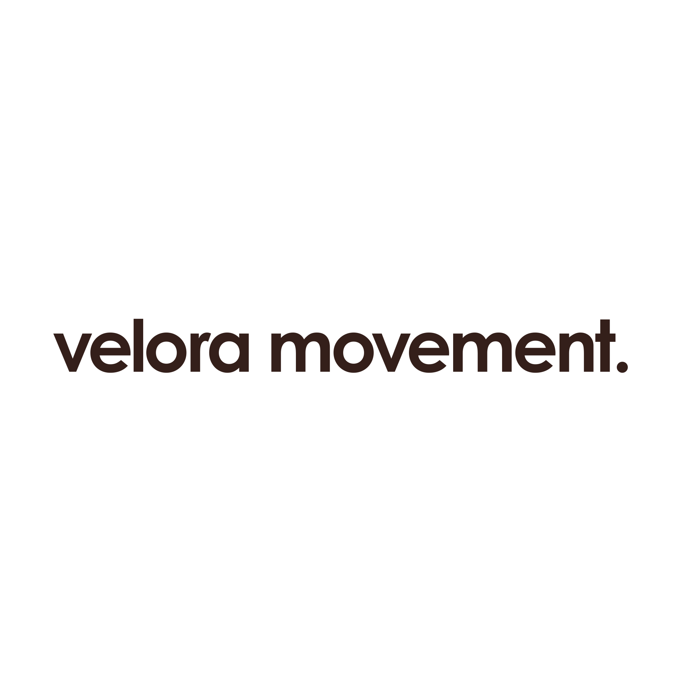
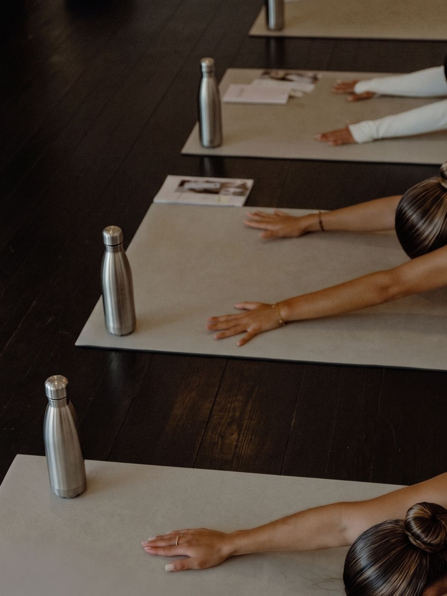
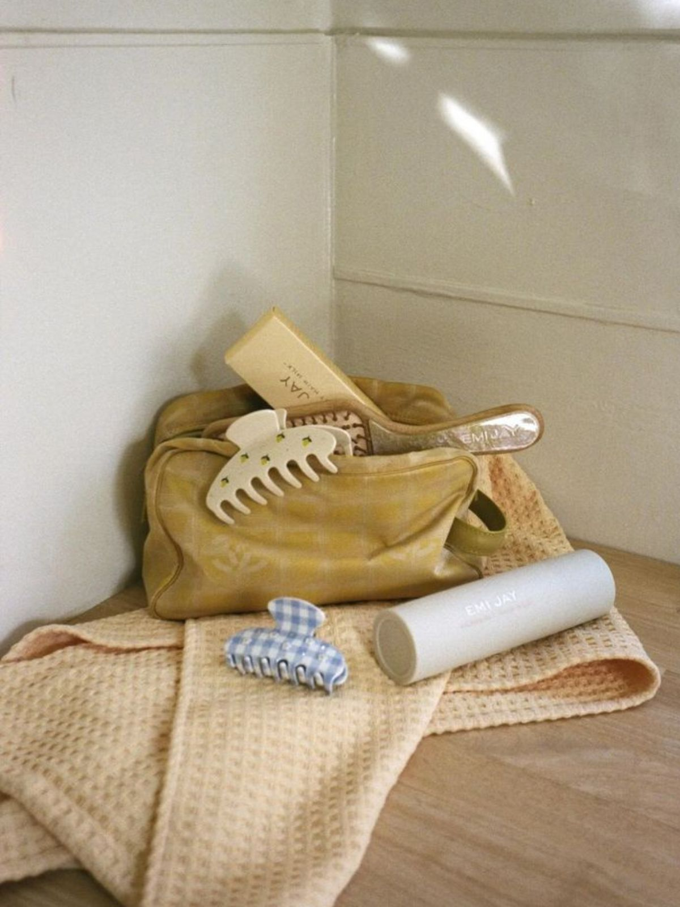
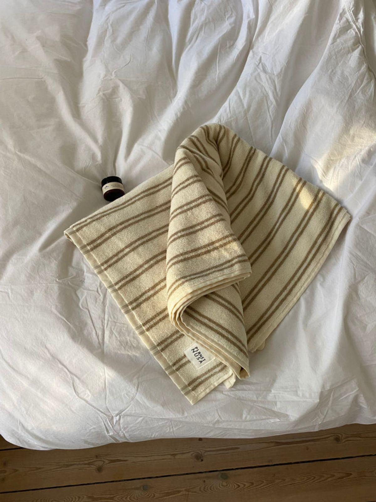
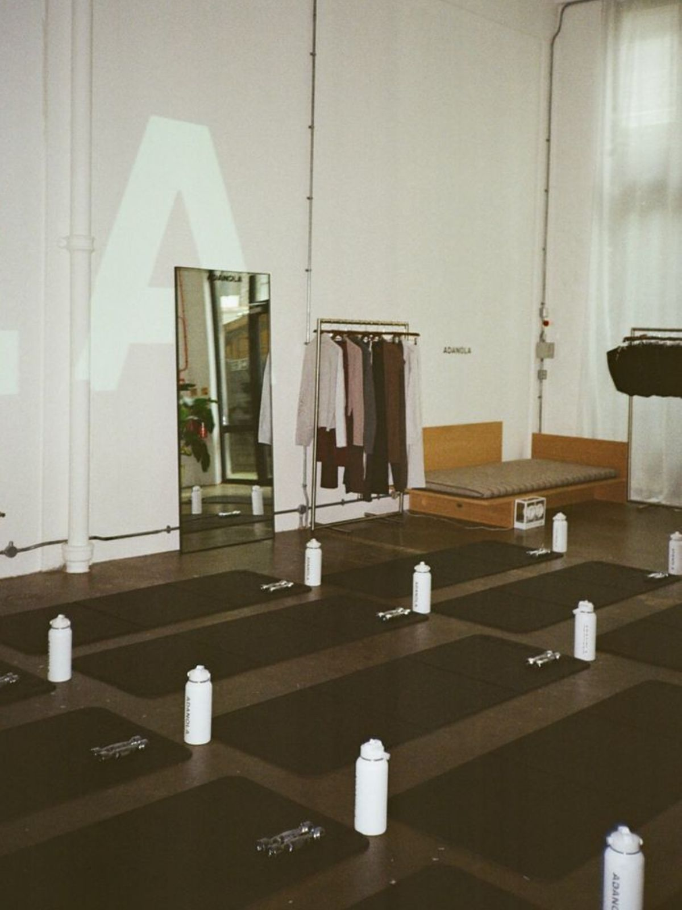

Yksittäinen tunti
Liity asiakkaaksi ja varaa haluamasi tunti suoraan kalenterista. Maksat vain käymistäsi tunneista, ilman sitoutumista, kun haluat liikkua omaan tahtiisi.
Katso eri tunnit →

Yksittäinen tunti vai kuukausipaketti, valitse niin kuin haluat.
Liity asiakkaaksi ja varaa haluamasi tunti suoraan kalenterista. Maksat vain käymistäsi tunneista, ilman sitoutumista, kun haluat liikkua omaan tahtiisi.
Katso eri tunnit →Kuukausipaketilla tunnit ovat edullisempia ja jäsenedut tulevat kaupan päälle. Valittavana kolme tasoa aloittelijasta rajattomaan, vaihda tasoa milloin tahansa.
Katso paketit →Säännöllinen liike on helpompaa, kun se kuuluu viikkoosi. Kokoa itsellesi sopiva kokonaisuus, kolme tasoa, oma rytmisi, ilman kiirettä.
Katso paketit →
Kolme tasoa, oma rytmisi. Valitse paketti, joka sopii viikkoosi, vaihda tasoa milloin tahansa, ilman kiirettä.
Täydellinen ensiaskel liikkeen pariin. Pakettiin kuuluu yksi joogatunti ja yksi stretching joka viikko, omaan tahtiisi. Saat online-jäsenyyden harjoitteluvideoineen, voit varata paikkasi etukäteen ja vaihtaa tasoa milloin tahansa. Ei sitoutumista eikä kiirettä, vain lempeä alku uudelle rutiinille.
Sinulle, joka aloitat tai palaat liikkeen pariin pitkän tauon jälkeen ja haluat löytää oman rytmisi täysin paineettomasti.

Monipuolinen kokonaisuus aktiiviseen viikkoon. Viikkoon mahtuu kaksi joogatuntia, yksi pilates ja yksi core, eli liikettä jokaiselle kehon osa-alueelle. Mukana online-jäsenyys, jäsenhinnat työpajoista ja oikeus ennakkovaraukseen. Suosituin valintamme tasapainoiseen ja säännölliseen rytmiin.
Sinulle, joka liikut jo säännöllisesti ja haluat monipuolisuutta sekä selkeän viikkorytmin ilman, että tunnit loppuvat kesken.

Rajaton paketti intohimoiselle liikkujalle. Käytössäsi ovat kaikki tunnit ja lajit, oma rytmisi ilman kattoa. Saat prioriteettivarauksen suosituimmille tunneille ja online-jäsenyyden koko kirjastoon. Liikkeestä tulee luonteva, päivittäinen osa arkea, ilman kompromisseja.
Sinulle, joka liikut usein ja haluat täyden vapauden valita lajisi päivästä toiseen, sekä etusijan suosituimmille tunneille.
